Alison Booth
Sadlier, Anna Theresa. Women of Catholicity: Memoirs of Margaret O'Carroll, Isabella of Castile, Margaret Roper, Marie de l'Incarnation, Marguerite Bourgeoys, Ethan Allen's Daughter. New York: Benziger, 1885; 1917.
Margaret O'Carroll, an Irish Princess of the 15th centuryIsabella of Castile, Queen of Spain, Surnamed the CatholicMargaret Roper, Daughter of Sir Thomas More, Chancellor of EnglandMarie de l'Incarnation, Foundress and First Superioress of the Ursulines of QuebecMarguerite Bourgeoys, Foundress of the Congregation of Notre Dame, MontrealEthan Allen's Daughter, The First American Nun
Title page announces, "Author of 'Names that Live in Catholic Hearts,' etc., etc."
Search OCLC WorldCat for this title.
Search Google Books for this title.
Sainte-Beuve, Charles Augustin, ed. [with commentary]. The Book of the Ladies, by Pierre de Bourdeïlle, Abbé de Brantôme. Translated by Katherine Prescott Wormeley. Boston: Hardy, Pratt, 1899; 1902. New York: Collier; London: Heinemann, 1899. Boston: Millet, 1909. As: Illustrious Dames of the Court of the Valois Kings, by Pierre Brantôme. Translated by Katherine Prescott Wormeley. New York: Lamb, 1912.
Cf. Arthur Imbert de Saint-Amand, Women of the Valois Court , 1893. Sainte-Beuve [1804-1869], prolific literary biographer and critic, promoted French women of letters through published correspondence; his name is associated with reprints of Brantôme as early as 1868.
TOC: Anne de Bretagne; Catherine de’Medici; Marie Stuart; Elisabeth of France; Marguerite; Mesdames; Madame Yoland; Madame Jeanne; Madame Anne; Madame Claude; Madame Renee; Mesdames Charlotte, Louise, Magdelaine, Marguerite; Mesdames Elisabeth, Claude, and Marguerite; Madame Diane; Marguerite de Valois; Isabella d’Austriche; Jeanne d’Austriche; Marie d’Austriche; Louise de Lorraine; Marguerite de Lorraine; Christine of Denmark; Marie d’Autriche; Blanche de Montferrat; Catherine de Cleves.
Search OCLC WorldCat for this title.
Search Google Books for this title.
Sainte-Beuve, Charles Augustin, Portraits of Celebrated Women. Translated by H. W. Preston. Portraits of Celebrated Women. Boston: Roberts, 1868; 1880; 1885; 1895. New York: Little, 1895; Putnam, 1925; Gardiners 2007.
TOC: Madame de Sévigné; Madame de La Fayette; Madame de Souza; Madame Roland; Madame de Staël; Madame de Duras; Madame de Remusat; Madame de Krudener; Madame Guizot.
British Library.
Portraits de femmes. Paris: Garnier, 1845. rev. ed. 1876. Editions in Paris and Berlin through the 1920s. English edition omits 6 subjects.
Search OCLC WorldCat for this title.
Search Google Books for this title.
Sanderson, Edgar, and John Porter Lamberton, John McGovern, Joseph Morgan Rogers, Laurence E. Greene, et al. Famous Women. Vol. 5 of Six Thousand Years of History. 10 vols. New York and Chicago: DuMont, 1899. Chicago and Philadelphia: Universal History, 1900. Philadelphia: DuMont, 1900. New York: DuMont, 1902. Rev. ed. Philadelphia: Nolan, 1906; 1907; 1913.
Began as Edgar Sanderson, The World's History and Its Makers , 10 vols. (Chicago: Universal History, 1901). Also by Sanderson et. al, The History and Progress of the World . Philadelphia: Nolan, 1913.
TOC: Judith; Aspasia; Cornelia; Cleopatra; Ayesha; Joan of Arc; Isabella; Catherine de'Medici; Queen Elizabeth; Queen Christina; Madame de Maintenon; Mary Washington; Maria Theresa; Catherine II; Marie Antoinette; Empress Josephine; Queen Victoria.
Search OCLC WorldCat for this title.
Search Google Books for this title.
Sangster, Margaret Elizabeth Munson. The Women of the Bible: A Portrait Gallery. New York: Christian Herald, 1911.
Foreword with facsimile signature testifies to the "enthusiasm" and "delight" with which she has written the book, as well as her care to "follow...the latest scholarly criticism" on the Marys (8-9); the book aims to "bring us all closer in friendship to the Master" (10). In pencil someone has written before the Foreword, "It must be a joy to women that when the Master was on Earth no woman's hand did him harm and no woman's voice was uplifted against Him" (3); this same hand wrote other confirming notes. A different pencilled hand answers "Shall we quote the story as we find it in the Bible?" with "sure, go ahead" (204). Sixteen fuzzy color plates listed as "Painted by Raphael," "Painted by Boulanger," etc., portraits with a long tradition of Orientalism. The Judith image is essentially the same as in Stowe's collection; Judith is set apart in a section, "A Woman of the Apocrypha," between a longer section (some 230 pp.) "In the Old Testament," and "In the New Testament" (243-363).
TOC: Eve, the Mother of All Living; Adah and Zillah; Sarah, a Princess; Hagar, a Bondwoman; A Monument and a Warning [Lot's wife]; Leah the Tolerated, Rachel the Well-Beloved; Rebekah, the Bride of Destiny; Jochebed, Miriam and Pharaoh's Daughter; Rahab of the Scarlet Cord; Deborah the Prophetess; Jephthah's Daughter; Delilah, the Betrayer; The Story of Ruth and Naomi; Hannah, the Woman Who Prevailed in Prayer; Michal, Saul's Daughter; Abigail, the Wife of a Churl; The Witch of Endor; Rizpah the Desolate; The Queen of Sheba; The Widow of Zarephath; Jezebel and Athaliah; The Shunammite, a Great Lady; The Little Captive Maid [about Naaman's leprosy, not bio]; Huldah, the Discreet Counsellor; Vashti the Deposed; Esther, the Savior of Her People; The Mother of Belshazzar; Judith and Holofernes; Mary, the Mother of Jesus; Elisabeth, the Wife of Zacharias; Salome, the Mother of James and John; The Woman at the Well of Samaria; Mary of Magdala; The Ruler's Little Daughter [unnamed]; Other Women Who Were Healed [not bios]; The Daughter of Herodias; The Sisters of Bethany; The Widow with the Two Mites; The Wife of Pilate; The Women at the Cross; Mary in the Garden; The Raising of Dorcas; A Damsel Named Rhoda; Lydia, the Hostess; A Mother and a Grandmother [not bios]; The Honor Roll of St. Paul [not bios].
Search OCLC WorldCat for this title.
Search Google Books for this title.
Sargeant, Charlotte Eliza. A Book for Mothers: or, Biographic Sketches of the Mothers of Great and Good Men. London: Collins, 1850.
British Library.
TOC: Mrs. John White; Mrs. Job Allen; Mrs. Knibb; Mrs. Nicoll; Mrs. Wood; Mrs. Heber; Mrs. Gurney; Mrs. Buxton; Mrs. Burritt; The Motherless, A Poem.
Search OCLC WorldCat for this title.
Search Google Books for this title.
[Scanlan, Nelle Margaret]. Boudoir Mirrors of Washington. Illustrated. Philadelphia and Chicago: Winston, 1923.
TOC: Introduction; I. Alice Roosevelt Longworth; Defying Convention; The Hatless Woman in the Senate Gallery; Enter Nick; Alice the Politician; II. Mrs. Woodrow Wilson; The Woodrow Wilson Language; Butlers and Cave Dwellers; The Contrasts of March the Fourth; The Tongues of Washington; The Penalties of Greatness; III. Florence King Harding; Her Finger on the Pulse; "Just Folks"; The Hospitable Hardings; Four Thousand Handclasps; IV. Mrs. Calvin Coolidge; Real Boys; Smiling Through; Steering a Safe Course; Abolishing the Bustle; Burdens and Beatitudes; V. Thomas D. Schall, The Blind Congressman (Mrs. Thomas D. Schall); VI. Social Publicity; VII. Mrs. William E. Borah; VIII. Mrs. Medill McCormick; IX. Mrs. Miles Poindexter; X. Cabinet Wives (Mrs. Charles Hughes, Mrs. John Weeks, Mrs. Henry Wallace, Mrs. Edwin Denby, Mrs. Albert Fall); XI. Limitations of Social Armaments (Mrs. Stephen Elkins); XII. Washington's Diplomatic Set (Madame Riano, Madame Sze, Madame Jusserand, Princess Bibesco); XIII. Glimpses of the Great (Lady Geddes); XIV. The Floral Offensive, or The Battle of the Buds (Ailsa Mellon); XV. Calling Days in the Capital; XVI. Supreme Court Wives (Mrs. William Howard Taft, Mrs. Oliver Wendell Holmes, Mrs. Louise Brandeis, Mrs. George Sutherland); XVII. Wives of Senate Lame Ducks (Mrs. Truman Newberry, Mrs. Atlee Pomerene, Mrs. Joseph Sherman Frelinghuysen, Mrs. Ira Clifton Copley, Mrs. Harry New, Mrs. William Calder); XVIII. The Social Lobby (Mrs. John B. Henderson); XIX. Dinner Delays (Mrs. Key Pittman); XX. Women in Congress (Jeannette Rankin, Alice Robertson, Winnifred Mason Huck, Mae Ella Nolan); XXI. Mrs. Herbert Hoover; XXII. Back to Main Street (Mrs. Frank Wheeler, Mrs. Philip Pitt Campbell, Miss Volstead, Mrs. Wells Goodykoontz, Mrs. Edgar Clarence Ellis, Mrs. William Wallace Chalmers).
264 pp., with portraits of the featured women. Lively, personal, and colloquial, almost as though it's parlor-room gossip. Author professes to hold the "Mirror to Facts - in their curling pins, and without powder on their noses," and many of the author's accounts are from her personal experiences and encounters with the women featured.
Search OCLC WorldCat for this title.
Search Google Books for this title.
Schmidt, Minna Moscherosch. 400 Outstanding Women of the World and Costumology of Their Time. Chicago: Schmidt, 1933.
NOT:=miscellaney, history. “This book is composed of two parts: the first is a compilation of biographical sketches of accomplished women throughout the world; the second is a series of essays on the social history of dress and fashion.”
Search OCLC WorldCat for this title.
Search Google Books for this title.
Scott, Eleanor [Helen Madeline Leys]. Adventurous Women. Illustrated by J. P. Paterson. London: Nelson, 1933.
TOC: Matilda of Normandy; Joan of France; Theresa of Spain; Mary of Scotland; Caroline of Berri; Anita Garibaldi of Italy; Mary Slessor of Calabar; Gertrude Bell of Arabia.
Pseudonym of Helen Madeline Leys, who also wrote novels as P. R. Shore. Thanks to Steve Holland's blog 23 October 2010 http://bearalley.blogspot.com. Accessed 9 June 2011.
Search OCLC WorldCat for this title.
Search Google Books for this title.
Scott, Eleanor [Helen Madeline Leys]. Heroic Women. London: Nelson, 1939.
TOC: Elizabeth Fry; Mother St. Dominic; Florence Nightingale; Christina Forsyth; Mary Bird.
The Nelsonian Library. Each chapter has a portrait of the woman it is about, either a photograph or a painted portrait (a twentieth-century romantic version of Nightingale). Frontispiece is a color modern version of a profile of Mrs. Fry seated reading the Bible in Newgate. The biographies tend to open with a novelistic scene, and dialogue is frequent. The portrait of "Christina Forsyth on Her Return from Africa" is unusual in noting "By courtesy of W.P. Livingstone, Esq." (facing p. 192): an older woman who appears much like a male explorer. Someone has annotated Forsyth's biography in pencil and red ink (in the foxed copy loaned by California State University, Sacramento): "Crossed in love; Housekeeper; marriage postponed; missionary" (pp. 196-7)' "School; Kafirs; Fingoes" (pp. 198-9, as Forsyth, then Miss Moir, is reading about the people she is going among); Paterson (the mission p. 201); "Marriage; Husband drowned" (pp. 208-9); "Work at Xolobe" (p. 213); "Work" (p. 229). Various passages in this biography are also marked vertically in the margins in blue pencil, for instance: "In those ten years she, a solitary white woman in a place which had been rightly called 'a nest of idolatry and vice', had created a civilized, happy community, where people...lived pleasantly together, learned trades...were educated at the school, and were learning decent habits of life" (234).
Search OCLC WorldCat for this title.
Search Google Books for this title.
Scott, Eleanor. War Among Ladies. London: Benn, 1928; Boston: Little Brown, 1928.
NOT=fiction. About a group of women teaching at Besley High School for girls; realist detail about school politics in contemporary terms, and shifting points of view.
Search OCLC WorldCat for this title.
Search Google Books for this title.
Scott, George Ryley. Ten Ladies of Joy. London: Harleian; New York: Greenberg, 1929. New York Greenberg, 1933. London: Houghton & Scott-Snell, 1935; Torchstream Books, 1950.
TOC: Queen Elizabeth; La Reine Margot; Ninon de Lenclos; Nell Gwyn; Catherine the Great; Madame du Barry; Lady Halton; Madame de Staël; George Sand; Lady Blessington.
Search OCLC WorldCat for this title.
Search Google Books for this title.
Scouller, Mildred Marshall. Women Who Man Our Clubs. Philadelphia: Winston, 1934.
In 221 thick pages, more than fifty 3-4-pp. biographical sketches, with 47 photographic portraits. A celebration of the American phenomenon of women's leadership through the club movement. The book is dedicated to the Junior Club movement. The Foreword honors "the mass effect of their collective activities and of their useful lives," the safety of democracy residing in "the every-widening family circle presided over by devoted, thoughtful, patriotic women" (ix-x). After a chapter on the history of the club movement comes a sketch of the founder of the General Federation of Women's Clubs, Mrs. Jennie C. Croly (1831-1901), followed by the alphabetical listings under "Pioneer Club Women," "Past Presidents...," President...1932-1935," "The Juniors," and a much longer list of "Other National Club Leaders." The prevalence of journalists perhaps leads to the style of a women's magazine, with some narrative openings with flashbacks, some dialogue (including offensive dialect of "an old colored porter" intended to make a joke that a newspaper woman is not a lady [220-1]).
Search OCLC WorldCat for this title.
Search Google Books for this title.
Scruggs, Lawson Andrew. Women of Distinction: Remarkable in Works and Invincible in Character. Raleigh, NC: L. A. Scruggs, 1893.
See How To Make It as a Woman, 219-21.
NOT = Reference Work. No table of contents available. This is a reference of nineteenth-century African American women of distinction. There are approximately 100 women included in this collection, and a brief chapter (3 – 5 pages) is dedicated to the life of each woman. Most chapters begin with the woman’s portrait. The preface states the mission: “To assist in giving this information to our young people, that they may be the more proud of their ancestors and love more devotedly their race…” In contrast to the earlier chapters, the last two chapters are not devoted to specific women, but rather themes. For example, Chapter 98 is titled, “Higher Education For Women,” and Chapter 99 is titled, “Influence of Negro Women in the Home.” The collection ends with an advertisement for Ringwood’s Illustrated Magazine – an African American magazine “devoted to the domestic, moral, social, educational, and artistic interests of our women and our girls.” No cover signal of African-American contents.
Search OCLC WorldCat for this title.
Search Google Books for this title.
Sell, Henry T. Studies of Famous Bible Women. New York: Revell, 1925.
TOC: Eve: The New Woman; Rebekah: Romance and Common Sense; Jochebed and Miriam: Resolute, Resourceful Women; Deborah: An Able Leader of Men; Delilah: A Temptress; Ruth: A Dependable Woman; Hannah: Mother of a Great Prophet; Queen of Sheba: The Seeker after Wisdom; Widow of Zarephath: Faith Under Difficulties; Jezebel: The Ruthless Queen; Esther: Self-sacrifice for a Cause; Woman of Solomon's Song: The Single Standard; Mother of Jesus: Best and Best Known; Wife of Peter: A Hidden Woman; Woman of Samaria: A Keen Questioner; Martha and Mary: A Task and a Vision; Mary Magdalene: A Woman of Large Service; Mother of James and John: An Ambitious Woman; Dorcas: A Philanthropic Woman; Mary, Mother of Mark: An Influential Church Worker; Lydia: A Business Woman.
Henry Sell, Doctor of Divinity, is advertised on a page preceding the title page as author of thirteen books of Bible studies, 350,000 copies sold. In 160 pages, the short chapters combine narrative and commentary with frequent references to chapter and verse. The text has the appearance of a guide, with the beginnings of paragraphs in bold type, whether they make sense as headings or not; some italicized subheadings. Each chapter ends with "Questions."
Search OCLC WorldCat for this title.
Search Google Books for this title.
Semple, James Alexander. Representative Women of Colorado: A Pictorial Collection of the Women Who Have Attained Prominence in the Social, Political, Professional, Pioneer and Club Life of the State. Denver: Alexander Art; Semple, 1911; 1914.
NOT = Reference Work. This collection offers brief biographical sketches of prominent women in Denver, Colorado. It contains approximately 100 women and includes portraits in about half of the biographies.
Search OCLC WorldCat for this title.
Search Google Books for this title.
Senior, Elizabeth. Henry VIII and His Wives. London: Collins, 1930-39?; 1940; 1942.
NOT:=male. Focused on the king, though a prosopography or portrait collection of his queens. "Eleven plates in colour and eleven illustrations in the text" appears on title page in small caps. It is part of Peacock Colour Books edited by Charles Mitchell; "Produced by Adprint Limited London W. I. ...Colour Photographs by Spectorcolour Ltd. London W. I." Some 20 pages of biography of Henry VIII are illustrated with numerous portraits of Henry, Cardinal Wolsey, and other men, but the full-page color portraits are mostly of the queens.
Search OCLC WorldCat for this title.
Search Google Books for this title.
Senior, Maud Mary. Some Women of the Gospels. London: Sheldon, [1940-49?].
Pending information on the contents of this collection.
Search OCLC WorldCat for this title.
Search Google Books for this title.
Senior, Maud Mary. Women Pathfinders. London: Sheldon, 1940.
Sixteen-page pamphlet. On title page, M. Mary Senior, Methodist Mission, Sierra Leone. "The manuscript of this book was obtained through the International Committee on Christian Literature for Africa, 2 Eaton Gate, London." On back paper cover: African Home Library (Each 1d.) 1. The Country of Jesus 2. The Fight for Health 3. Children Fight Enemies of Health 4. Woman's Work in the Home 5. Women Pathfinders 6. African Women Pathfinders 7. Money and Its Uses 8. The Fruits of the Ground. Obviously a711 in this bibliography is item 6 in this list, as this is item 5.
TOC: Introduction; Pandita Ramabai; Florence Nightingale; Helen Keller; Madame Chiang Kai Shek; Tseng Pao-Swen.
Search OCLC WorldCat for this title.
Search Google Books for this title.
Senior, Maud Mary. African Women Pathfinders. London: Sheldon, 1940.
Pending information on the contents of this collection.
Search OCLC WorldCat for this title.
Search Google Books for this title.
Sergeant, Philip Walsingham. Dominant Women. London: Hutchinson, 1929; 1930; Freeport: Books for Libraries, 1969.
TOC: Cleopatra the Magnificent; Zenobia, Queen of the East; Theodora of Byzantium; England's Royal Enigma [Queen Elizabeth]; Tarabai Rani; “The Beastly Brace” [Duchesses of Cleveland and Portsmouth, Mistresses of Charles II]; Duchess Sarah; Woman-Rule in Russia [Catherine I and Catherine II of Russia, Empress Elizabeth of Russia]; The Dancer-Politician [Lola Montez]; “The Old Buddha” [Tze-hi].
Expert on chess, biographer of Cleopatra, Catherine the Great, Josephine, Tze-hi the Empress Dowager of China, Eugénie, Anne Boleyn, Barbara Villiers (Duchess of Cleveland); books on gamblers, fakers, Historic British Ghosts (1936), etc.
Search OCLC WorldCat for this title.
Search Google Books for this title.
Sergeant, Philip Walsingham. Rogues and Scoundrels. London: Hutchinson, 1924. New York: Brentano's, 1927.
NOT:=male-female collective biography. Includes Anna, Countess of Shrewsbury, and Mary de la Rivière Manley with men.
Search OCLC WorldCat for this title.
Search Google Books for this title.
Serviez, Jacques Roergas de. The Roman Empresses; or, the History of the Lives and Secret Intrigues of the Wives of the Twelve Caesars: With Historical and Critical Notes. 2 vols. in 1. London: Walpole, 1899; 1909. New York: Nichols, 1913; American Anthropological Society, 1925; Dingwall-Rock, 1932. Title variant: Lives of the Roman Empresses: The History of the Lives and Secret Intrigues of the Wives, Sisters, and Mothers of the Ceasars. New York: Wise, 1935.
Original English version pub. 1752 (see c022).
TOC: Calpurnia, Wife of Julius Ceasar; Livia, Wife of Augustus; Julia, Wife of Tiberius; Livia Orestilla, Lollia Paulina and Caesaonia, Wives of Caligula; Livia Orestilla, Wife of Caligula; Lollia Paulina, Second Wife of Caligula; Caesonia, Third Wife of Caligula; Valeria Messalina, Wife of Claudius; Agrippina, Second Wife of Claudius; Octavia, Wife of Nero; Popaea, Second Wife of Nero; Messalina, Third Wife of Nero; Lepida, Wife of Glaba; Poppaea, Wife of Otho; Galeria Fundana, Wife of Vitellius; Domitilla, Wife of Vespasian, Macrua Furnilla, Wife of Titus; Domitia, Wife of Domitian; Plotina, Wife of Trajan.
Search OCLC WorldCat for this title.
Search Google Books for this title.
Sewell, Daisy Elizabeth McQuigg. Ideal Womanhood: A Bible Study of Womanhood: Including a Study of the Women of the Old and New Testaments. Austin, TX: Firm Foundation, 1927; 1936; 1947.
Search OCLC WorldCat for this title.
Search Google Books for this title.
Sheridan, Clare. Russian Portraits. London: Jonathan Cape, 1921. As: Mayfair to Moscow . New York: Boni & Liveright, 1921.
TOC: Clare Sheridan; Bust of Krassin; View of Guest House; Bust of Zinoviev; Bust of Dsirjinsky; Bust of Lenin; Bust of Trotzky; Group on Aquitania.
Search OCLC WorldCat for this title.
Search Google Books for this title.
Shorter, Susan I. The Heroines of African Methodism. Illustrated. Jacksonville, FL: Chew, 1891.
NOT=Miscellaneous history. 48 pp. “At the Octogenenial celebration of Bishop Daniel A. Payne, D.D.L.L., D., February 24, 1891, Jacksonville, Florida.” Introduction by Bishop B. W. Arnett, D. D., primarily a life of Daniel Alexander Payne.
Search OCLC WorldCat for this title.
Search Google Books for this title.
Sickels, Eleanor Maria. In Calico and Crinoline: True Stories of American Women, 1608-1865. New York: Viking, 1935; 1936: 1941; 1946; 1955; 1963. Freeport, NY: Books for Libraries, 1971.
NOT=fiction. Sickels in "About this Book" and "About Certain Other Books" claims to be faithful to historical fact, and acknowledges permission for copyrighted materials; many of her sources are collective biographies such as Ellet's. Counterpart to Sickels' Twelve Daughters of Democracy, 1941 (see entry p119). Illustrations by Ilse Bischoff. The subjects include Anne Burras Laydon, Annie Hutchinson, Ruth Wyllys, Elizabeth Martin, Sister Marie-Madeleine Hachard, Lydia Darrah, Dicey Langston, Catherine Schuyler, Catherine Sherrill Sevier, Sacajawea, Concepcion Arguello, Susanna Dickerson, Narcissa Prentiss Whitman, Lucy Larcom, Louisa McCord, Harriet Tubman, Belle Boyd, and Mary Ann Ball Bickerdyke.
Search OCLC WorldCat for this title.
Search Google Books for this title.
Sigourney, Mrs. L[ydia]. H[untley]. Examples from the Eighteenth and Nineteenth Centuries. 1st ser. New York: Scribner, 1857.
NOT:=male-female collective biography. Including 7 women out of 17 in chronological order. Sigourney author of Pocahontas and Other Poems (1841); Biography of Pious Persons: Abridged for Youth (1832), and numerous hymns, funeral sermons, and annuals.
TOC: Lady Selina Huntington; Mrs. Jerusha Lathrop; Mrs. Hannah More; Mrs. Martha Laurens Ramsay; Miss Ann Maria Hyde; Mrs. Felicia Hemans; Mrs. Mary L. Ware.
Search OCLC WorldCat for this title.
Search Google Books for this title.
Sigourney, Mrs. L[ydia]. H[untley]. The Girl's Own Book. 1837; London: Nelson, 1852.
NOT:=advice.
Search OCLC WorldCat for this title.
Search Google Books for this title.
Sigourney, Mrs. L[ydia]. H[untley]. Great and Good Women: Biographies for Girls. Edinburgh: Nimmo, [1866]; 1871; Nimmo, Hay & Mitchell, 1885.
At least one piece appears to be largely an excerpt from Chambers's Journal.
TOC: Monica; Queen Catherine Parr; Jane, Queen of Navarre; Lady Jane Grey; Ann Eliot [Wife of Early New England John Eliot]; The Countess of Suffolk; The Countess of Warwick; Mrs. Mary Lloyd [1681-1749, Exemplary New England Mother and Three-Time Wife]; Mrs Ann Egede [Norwegian Missionary, Wife and Mother, in Greenland]; The Good Queen [Bertha, Who Converted Ethelbert of Kent to Christianity in 597]; Mrs Mary Washington; Elizabeth Fry; Anne Hasseltine Judson; Margaret Mercer [1791-1846, Well-Connected American Christian Educator]; Mrs Wilson [Educator of Women in India].
British Library: listed under Huntley. Listed in Nimmo ads of 1875 (Bruce, Book of Noble Englishwomen ). Cf. title variants, [Cochrane], Lives of Good and Great Women . Indiana Univ. copy n.d. inscribed “Miss Emily Pike [?]/A prize for General/Order./ Thempsey/Xmas[?]/1869.” Frontis. colored engr. “Great and Good Women”: a contemporary mother tucking a small child wearing a cap into a comfortable, curtained bed in a well-furnished, carpeted room, by candlelight.
Search OCLC WorldCat for this title.
Search Google Books for this title.
Simpson, Harold, and Mrs. Charles Braun. A Century of Famous Actresses, 1750-1850. London: Mills & Boon, 1913.
The purpose of the collection is stated in the Preface as follows: “This book is not an attempt at exhaustive biography…it is, rather, a collection of character studies; little pen-pictures of famous women of the theatre during the period which it covers, and of the parts they played on and off stage.” The collection also features illustrations of the women, usually dressed in character.
TOC: Those That Came Before; The Rival Juliets – Mrs.Cibber; The Rival Juliets (continued) – G.A. Bellamy; Peg Woffington; Kitty Clive; Mrs. Pritchard; Mrs. Yates and Anne Barry; Mrs. Abington; Some Stars and Lesser Stars, 1750-1800; Some Stars and Lesser Stars (continued); Theatres and Public Taste; Miss Farren; Mrs. Jordan; Mrs. Siddons; The Kembles; Miss O’Neill; Some Stars and Lesser Stars, 1800-1850; Some Stars and Lesser Stars (continued); Helen Faucit and Mrs. Charles Kean; Those That Came After.
Search OCLC WorldCat for this title.
Search Google Books for this title.
Simpson, Helen Macdonald. The Women of New Zealand. Wellington, NZ: Dept. of Internal Affairs, New Zealand, 1940; Aukland, NZ: Paul's Book Arcade, 1962; London: G. Allen and Unwin, 1962.
TOC: Preface; Before Waitangi; The Voyage; The Early Home-Makers; Social Pleasures; Occupations; Women in Association; Postscript: since 1940.
NOT= historiography
Search OCLC WorldCat for this title.
Search Google Books for this title.
Sinclair, May. The Three Brontës. London: Hutchinson, 1900; 1911; 1912; 1914; 1933. Boston and New York: Houghton Mifflin, 1912; 1913; 1914. Port Washington, NY: Kennikat, P., 1939; 1967.
TOC: Charlotte Bronte; Anne Bronte; Emily Bronte.
Search OCLC WorldCat for this title.
Search Google Books for this title.
Singleton, Esther, ed. and trans. Famous Women as Described by Famous Writers. New York: Dodd, Mead, 1904; 1907.
Part of Singleton's extensive series of travels or guides to the arts repeating the formula: Japan as Seen and Described by Great Writers (Dodd Mead, 1904); Historic Buildings of America as Seen and Described by Great Writers (Dodd Mead, 1906). Singleton also published books on art, antiques, architecture, dolls, furniture, opera, as well as histories and historical fiction. Famous Women as Described by Great Writers , abridged (New York: Nova Science Publishers, 2002).
TOC: Mary, Queen of Scots; Madame de Maintenon; Louise de Queroualle; Margaret of Parma; Marie de Mancini; Elizabeth, Queen of England; La Marquise de Montespan; The Duchess of Cleveland; Madame Roland; Lady Hamilton; La Duchesse de Maine; Agnes Sorel; Lady Blessington; La Duchesse de Chevreuse; Lady Jane Grey; Anne de Pisseleu; Bianca Capello; Madame de Pompadour; Bess of Hardwick; Gabrielle d’Estrees; Isabella of Austria; Christina, Queen of Sweden; Mrs. Fitzherbert; Henriette de Balzac; Sarah, Duchess of Marborough; Madame de Longueville; Catherine II; Madame Recamier; Elizabeth Cromwell Claypole; Isabella d’Este; La Duchesse de Berri; Joan of Arc; Henrietta Maria; Diane de Poitiers; Madame des Ursins; Madame du Barry; Margaret Douglas; Catherine de Medici; Caterina Cornaro; Anne Marie Louise d’Orleans.
-
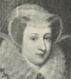Mary, Queen of Scots
-
 Madame de Maintenon
Madame de Maintenon -
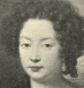Duchess of Portsmouth
-
 Margaret of Parma
Margaret of Parma -
 Marie de Mancini
Marie de Mancini -
 Elizabeth, Queen of England
Elizabeth, Queen of England -
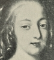La Marquise de Montespan
-
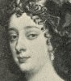The Duchess of Cleveland
-
 Madame Roland
Madame Roland -
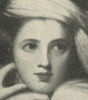Lady Hamilton
-
 La Duchesse du Maine
La Duchesse du Maine -
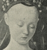Agnes Sorel
-
 Lady Blessington
Lady Blessington -
 La Duchese de Chevreuse
La Duchese de Chevreuse -
 Lady Jane Grey
Lady Jane Grey -
 Anne de Pisseleu
Anne de Pisseleu -
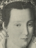Bianco Capello
-
 Madame de Pompadour
Madame de Pompadour -
 Bess of Hardwick
Bess of Hardwick -
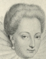Gabrielle d'Estrees
-
 Isabella of Austria
Isabella of Austria -
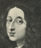Christina, Queen of Sweden
-
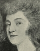Mrs. Fitzherbert
-
 Henriette de Balzac
Henriette de Balzac -
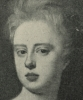Sarah, Duchess of Marlborough
-
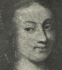Madame de Longueville
-
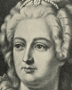Catherine II, Empress of Russia
-
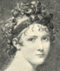Madame Recamier
-
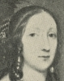Elizabeth Cromwell Claypole
-
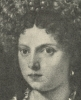Isabella d'Este
-
 La Duchesse de Berri
La Duchesse de Berri -
 Joan of Arc
Joan of Arc -
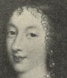Duchess of Orleans
-
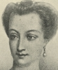Diane de Poitiers
-
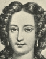Madame des Ursins
-
 Madame du Barry
Madame du Barry -
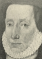Countess of Lennox
-
 Catherine de Medici
Catherine de Medici -
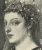Caterina Cornaro
-
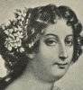La Grande Mademoiselle
Search OCLC WorldCat for this title.
Search Google Books for this title.
Skaer, Georgia Blaney. The Women of the Bible. Kansas City, MO: Burton, 1927.
Rare non-circulating book under copyright. Georgia Blaney-Skaer published poetry included in a collection of works by Kansas poets in 1927 (edited by Helen Rhoda Hoopes).
Search OCLC WorldCat for this title.
Search Google Books for this title.
Skidmore, Margaret A. Women Pioneers in Sheffield Methodism. [Sheffield]: n.p., n.d.
Search OCLC WorldCat for this title.
Search Google Books for this title.
Skinner, Charlotte. Sisters of the Master. London: Partridge, [1900s?].
Biblical women.
Search OCLC WorldCat for this title.
Search Google Books for this title.
Skinner, Charlotte. Uncrowned Queens. London: Partridge, [1900?].
Search OCLC WorldCat for this title.
Search Google Books for this title.
Smith, Daniel, comp. Gems of Female Biography. New York: Nelson & Phillips; Cincinnati, OH: Hitchcock & Walden, 1850. New York: Carlton & Porter; Lane & Scott, 1852; Carlton & Phillips, 1854; 1856.
TOC: Lady Jane Grey; Queen Catharine Parr; Jane, Queen of Navarre; Mary, Countess of Warwick; Lady Rachel Russell; Mrs. Elizabeth Burnet; Mrs. Elizabeth Rowe; Lady Halket; Mrs. Lucy Hutchinson; Mrs. Margaret M. Althans; Mrs. Isabella Graham; Miss Ann Bacon; Mrs. Abigail Morris; Mrs. Jane R. Rust.
Search OCLC WorldCat for this title.
Search Google Books for this title.
Smith, George Barnett. Noble Womanhood: A Series of Biographical Sketches. [London]: SPCK; New York: Young, 1894; 1912.
TOC: Princess Alice, Grand Duchess of Hesse; Florence Nightingale; Frances Ridley Havegal; Harriet Beecher Stowe; Sister Dora; Louisa May Alcott; Elizabeth Fry; Felicia Dorothea Hemans.
Search OCLC WorldCat for this title.
Search Google Books for this title.
Smith, George Barnett. Women of Renown: Nineteenth Century Studies. London: W. H. Allen, 1893.
TOC: Fredrika Bremer; Marguerite Countess of Blessington; George Eliot; Jenny Lind; Mary Somerville; George Sand; Mary Carpenter; Sydney Lady Morgan; Rachel; Lady Hester Stanhope.
Search OCLC WorldCat for this title.
Search Google Books for this title.
Smith, John Frederick. Romantic Incidents in the Lives of the Queens of England. New York: Garrett; Dick & Fitzgerald, 1853.
TOC: Elizabeth Woodville, Queen Consort of Edward IV; Eleanora of Aquitaine, Queen Consort of Henry II; Matilda of Flanders, Queen Consort of William the Conqueror; Matilda Atheling, Queen Consort of Henry I.
URLSearch OCLC WorldCat for this title.
Search Google Books for this title.
Smith, Mary Ann. The Holy Women of Old: Seventeen Lessons. Edinburgh: John Anderson, 1897.
TOC: Eve; Sarah; Rebekah; Leah and Rachel; Miriam; Ruth; Hannah; Esther; Elisabeth and Anna; The Virgin Mary; Martha; Mary of Bethany; Mary Magdalene; Mary; Dorcas; Lydia and Priscilla; Other New Testament Holy Women.
Search OCLC WorldCat for this title.
Search Google Books for this title.
Snell, Frederick John. The Girlhood of Famous Women. Illustrated by Margaret Tarrant. London: Harrap, 1915; 1920; 1922.
Author of books on early modern England, e.g. Customs of Old England (1911). Part of Heroes of All Time series, which includes Snell's Boys Who Became Famous and Garibaldi and his Red-Shirts, along with individual male biographies as well as two books by E. M. Wilmot-Buxton (one about Joan of Arc) and separate lives of Marie Antoinette, Queen Victoria, and Queen Elizabeth I. Compare S. Bolton, Jos. Johnson. A handsome leather spine with gilded sword and torch and stamped gilded pattern on front cloth cover. Color frontispiece, "A Visit from Florence Nightingale" to an old lady in bed; eight other narrative images in black and white, e.g. Maria Edgeworth enacting a bedroom story for a group of girls, "Thrilled by romantic narratives from her fertile brain" (16). Preface: "designed as a companion to a previous volume, entitled Boys who Became Famous" (5). Snell denies that there are fewer "great women" than men, especially since the concept of fame or greatness is elastic. He lists the biographies or autobiographies that he drew from (5-6). Other than Joan of Arc, the list is eighteenth- and nineteenth-century, centered on literature and arts, and women who wrote about their own childhoods. The style is accessible but not that of children's adventure stories; Snell discusses biographical versions, and uses "we" fairly often.
TOC: Maria Edgeworth; The Princess Elizabeth; Sarah Kemble (Mrs Siddons); Fanny Kemble; Hannah More; Louisa May Alcott; Helen Keller; Jenny Lind (Madame Lind-Goldschmidt); Florence Nightingale; Jeanne d'Arc; Emma Lajeunesse (Madame Albani); Rosa Caroline Mackworth Prior (Mrs Campbell Praed); The Princess Victoria; Marie Louise Elisabeth Vigée (Madame le Brun); Isabella Bird (Mrs Bishop); Marie Corelli.
Search OCLC WorldCat for this title.
Search Google Books for this title.
Snyder, Rev. Harvey Albert, and Ethel Wendell Trout. Girls of the Bible: Told in Simple Language. New York: Holt, Rinehart & Winston, 1929.
TOC: The Story of Rebekah; How Jacob Found His Wife; How Miriam Saved Her Brother Moses; Faithful Ruth and Her Good Fortune; A Great Queen Who Visited a Great King; The Wickedness of Queen Jezebel; A Little Captive Maid Helps Her Master; The Story of Good Queen Esther; Mary the Mother of Jesus; The Raising of Jairus' Daughter; The Story of a Foreign Woman and Her Child; Two Sisters Who Loved Jesus; How Jesus Appeared First to a Woman After His Resurrection; A Good Woman Restored to Life; Lydia the First Christian Convert in Europe; The Slave Girl Who Mocked the Apostles; Priscilla Who Helped to Spread the Gospel in Greece.
Search OCLC WorldCat for this title.
Search Google Books for this title.
Soissons, Comte de Guy Jean Raoul E. C. E. Seven Richest Heiresses of France. London: Long, 1911.
“An account of Cardinal Mazarin and his seven nieces” by a biographer of Eugénie.
TOC: Laura Martinozzi; Laura Mancini; Anne Marie Martinozzi; Marie Mancini; Olympia Mancini; Hortense Mancini; Marie Anne Mancini.
Search OCLC WorldCat for this title.
Search Google Books for this title.
Soissons, Comte de Guy Jean Raoul E. C. E. Six Great Princesses. London: Holden, 1913.
The six daughters of Philip II, Duke of Orleans. The Preface states, "This book, however, is not intended to be a defence of the Regent, although it includes some illuminating thoughts concerning his personality. It is an account of his six daughters, who were undoubtedly great princesses, and whose lives, strange and even extravagant as they were, should prove not only interesting, but also instructive reading to those who are fond of intimate history."
TOC: The Regent d'Orleans; The Regent's Wife; The Regent's Mother; The Duchess de Berry - Her Mother's Schemes for Her; The Duchess de Berry - Her Projected Marriage; The Duke de Berry - His Bride's Disposition - Matrimonial Preliminaries; The Duchess de Berry - Her Intrigues; The Duchess de Berry and Her Mother; Mme. de Berry's Enhanced Position; The Duchess de Berry - Death of Her Husband and the King; The Duchess de Berry - The Regency Begins; The Duchess de Berry - Her Guards and Her Lover; The Regent's Suppers; The Regent's Suppers and Mistresses; The Duchess de Berry - Magnificence and Repentance; The Duchess de Berry - Her Marriage and Her Death; The Duchess de Berry - Mme. de Mouchy and M. de Riom; The Abbess of Chelles - Her Early Years; The Abbess of Chelles - She Takes the Veil - Her Installation; The Abbess of Chelles - Her Mutability - Cardinal de Bissy; The Abbess of Chelles - Her Last Years and Death; The Duchess of Modena - Her Love-Affair with Richelieu; The Duchess of Modena - Her Marriage to Francis d'Este; The Duchess of Modena - Her Early Married Life; The Duchess of Modena - Her Later Life and Death; The Queen of Spain - Her First Years and Marriage; The Queen of Spain - Her Whims and Ill-behaviour; The Queen of Spain - Her Married Life, Troubles and Death; Mademoiselle de Beaujolais; The Princess de Conti.
Search OCLC WorldCat for this title.
Search Google Books for this title.
Sokolnikova, Galina Osipovna Serebriakova. Nine Women: Drawn From the Epoch of the French Revolution. Translated by H. C. Stevens. Introduction by Mrs. Sidney Webb. [New York: Ballou]; London: Cape, 1932.
TOC: Théroigne de Méricourt; Charlotte Corday; Manon Roland; Madame du Barry; Claire Lacombe; Lucile Desmoulins; Elisabeth Lebas; Madame Tallien; Joséphine Bonaparte.
Search OCLC WorldCat for this title.
Search Google Books for this title.
Somerville, Rose. Brief Epitomes of the Lives of Eminent Women. London: Women's Printing Society, 1886; [1896].
TOC: Josephine Butler; Frances Power Cobbe; Sister Dora.
British Library. 32-pp. pamphlet: “first of a series.” “The ‘New Woman,’ so-called, is not the exclusive production of this latter end of the nineteenth century, but has flourished wherever women have had the courage to shape their lives according to the dictates of their own consciences” (22). Cambridge University Library blurred acquisition stamp 23 March 1896 on cover and titlepage; light-olive green cover torn vertically upper left with white rectangle stamp 1545. Cream-colored, thick-weave paper; two stitches; some slightly separating. Butler bio begins with warlike tropes: “leaders of men…danger into opportunity…noble purpose. Not for bravery alone, is a general famous…” “Such a leader is…a representative woman of this century. Not only did she ennoble the cause for which she fought...” (3), she stayed calm in the “heat and din of a warfare” (4).

Search OCLC WorldCat for this title.
Search Google Books for this title.
Sparrow, Walter Shaw, ed. Women Painters of the World: From the Time of Caterina Vigri, 1413-1463, to Rosa Bonheur and the Present Day. London: Hodder & Stoughton; Toronto: Copp Clark; New York: Stokes, 1905. New York: Hacker Art Books, 1976.
Eight essays by various authors on the female painters of a range of European countries and U.S.
Search OCLC WorldCat for this title.
Search Google Books for this title.
Spaull, Hebe. Women Peace Makers. London: Harrap, 1924.
TOC: A Danish Woman and the League: Frøken Forchhammer; The Story of a World Crusade for Social Betterment: Dame Rachel Crowdy; ‘Mothering’ Children for the League of Nations: Frøken Jeppe; The Factory-Workers' Friend: Fru Kjelsberg; A Great Scientist and the League: Mme. Curie; A Mother's Work for Peace: Mrs. Coombe Tennant, J. P; A British Woman at the Assembly: Dame Edith Lyttelton.
Search OCLC WorldCat for this title.
Search Google Books for this title.
Spielmann, Mrs. Meyer A. Jewish Women Writers: Presidential Address to the Union of Jewish Literary Societies. London, n.p., 1913.
NOT= literary miscellany, lecture: 24-pp. biographical literary study. Women mentioned include: Miriam, the sister of Moses; Deborah, the prophetess; Huldah, the prophetess; Esther; Ima Shalom; Beruria; Jalta; Deborah Ascarelli; Sara Copia Sullam; Glückel von Hameln; Dorothea Mendelssohn; Henriette Herz; Rahel Varnhagen; Grace Aguilar; Rachel Morpurgo; Henriette Oppenheimer; Martha Wolfenstein; Emma Lazarus; Mary Antin; Amy Levy; Lady Simon; Lady Magnus; Mrs. Henry Lucas; Mrs. Salaman (Nina Davis); Mrs. Nathaniel Cohen; Mrs. Morris Joseph; Miss Re Henry; Mrs. Marion Spielmann; Miss Lily Montagu; Mrs. Ada Leverson; Mrs. A. Frankau; Miss Regina Bloch; and Miss Jeanne Berman.
Search OCLC WorldCat for this title.
Search Google Books for this title.
Spofford, Harriet Elizabeth Prescott, et al. Three Heroines of New England Romance. Boston: Little, Brown and Co., 1894; 1895; John Wilson and Son, 1894. London: J. M. Dent and Co., 1894.
TOC: Priscilla: Harriet Prescott Spofford; Agnes Surriage: Alice Brown; Martha Hilton: Louise Imogen Guiney.
Search OCLC WorldCat for this title.
Search Google Books for this title.
Spofford, Harriet Elizabeth Prescott. A Little Book of Friends. Boston: Little, Brown, 1916; 1917.
TOC: Annie Fields; Sarah Orne Jewett; Anne Whitney; Celia Thaxter; Gail Hamilton; Mary Louise Booth; Jane Andres; Louisa Stone Hopkins; Rose Terry Cooke; Louise Chandler Moulton.
An extended coterie of writers.
Search OCLC WorldCat for this title.
Search Google Books for this title.
Sprague, William Buell, and Jonathan Mayhew Wainwright, eds. The Women of the Bible. Delineated in a Series of Sketches of Prominent Females Mentioned in Holy Scripture. By Clergymen of the United States. Illustrated. New York and Philadelphia: Appleton, 1849; 1852; 1855. Title variant: Women of the Old and New Testament: A Series of Portraits. With Characteristic Descriptions, by Several American Clergymen. New York and Philadelphia: Appleton, 1850; 1851.
TOC: The Virgin Mary [by] W. Ingraham Kip; Sarah [by] Erskine Mason; Elizabeth [by] W.B. Sprague; Miriam [by] Rev. Charles Wadsworth; Anna the Prophetess [by] Rev. E.N. Kirk; Rahab [by] Rev. A.A. Wood; Herodias [by] Ebenezer Halley; The Levite's Wife [by] N.S.S. Beman; Woman of Samaria [by] Rt. Rev. J.P.K. Henshaw; Zipporah [by] John Todd; The Canaanitish Woman [by] Thomas Smyth; The Witch of Endor [by] Samuel Hanson Cox; Daughter of Jairus [by] William B. Sprague; Widow of Nain [by] Rt. Rev. J.H. Hopkins; Michal [by] Rev. J.F. Stearns; Martha [by] Rev. Robert A. Hallam; Mary Magdalene [by] Nicholas Murray; Bathsheba [by] Rev. R.S. Storrs, Jr.
Under either Sprague or Wainwright with different titles; see Women of the Old and New Testament . Sprague author of The Excellent Woman, as Described in the Book of Proverbs (1851) and Letters on Practical Subjects to a Daughter (1831). WorldCat.
Search OCLC WorldCat for this title.
Search Google Books for this title.
Staal, Gustave. The Bible Gallery: Portraits of Women Mentioned in Scripture. Engraved by the most eminent artists, from drawings by G. Staal. London: David Bogue, 1847.
TOC: Hagar; Rachel; Rebekah; Wife of Potiphar; Pharaoh's Daughter; Deborah; Jephthah's Daughter; Delilah; Ruth; Hannah; Abigail; Jezebel; The Queen of Sheba; Esther; Athaliah; Judith; The Mother of the Maccabees; Sara, Wife of Tobias.
“Each portrait accompanied by descriptive text.” Staal designed the illustrations for Clarke's World-Noted Women (1858) and other mid-century gift books.
Search OCLC WorldCat for this title.
Search Google Books for this title.
Staley, John Edgcumbe. Famous Women of Florence. Illustrated. London: Constable; New York: Scribner, 1909.
TOC: Beatrice de' Portinari - Di Simone de' Bardi: The Type of the New Woman; Camilla Lucrezia de' Tournabuoni - Di Piero de' Medici: "The Queen of Florence"; Simonetta de' Cattanei - Di Marco de' Vespucci: "The Star of Genoa"; Giovanna Degli Albizzi - Di Francesco de' Tornabuoni: Wife of "The Mirror of Fashion"; Alessandra de' Machingi - Di Matteo Negli Strozzi: "The Mother of the Strozzi"; Lisa de' Gherardini - Di Francesco del Giocondo: Leonardo's "Mona Lisa"; Bianca de' Cappelli - Di Francesco de' Medici: "The Daughter of Venice".
Search OCLC WorldCat for this title.
Search Google Books for this title.
First page with text features "New Books" from publisher, including two historical books from this collection's author (one on Lola Montez and another on the tragedies of the Medici). Title page subtitles the book "The Wives of the Doges." The TOC features only chapter numbers with lengthy running headers of a historical nature (such as "The dreaded Huns" or "Early Dress and Manners"), with many women listed in each chapter.
Search OCLC WorldCat for this title.
Search Google Books for this title.
Staley, John Edgcumbe. Heroines of Genoa and the Rivieras. New York: Scribner, 1911; 1912. London: Laurie, 1911.
NOT = History. First page with text features "New Books" from publisher, including one book from this collection's author (See item a748, The Dogaressas of Venice ). The TOC offers general chapter titles (such as "Christ and Cupid" or "Crusades and Crafts") followed by lengthy lists of subject matter, which is of a generally historical nature and names few women specifically.
Search OCLC WorldCat for this title.
Search Google Books for this title.
Staley, John Edgcumbe. King Rene d'Anjou and His Seven Queens. London: Long; Hutchinson, 1912. New York: Scribner, 1912.
NOT:=male-female collective biography.
Search OCLC WorldCat for this title.
Search Google Books for this title.
Starling, Elizabeth. Noble Deeds of Woman. London: Hookham, 1835. 2 vols. Philadelphia: Carey, Lea & Blanchard, 1836. Title variant: ...Or, Examples of Female Courage and Virtue. London: Bohn, 1848. Boston: Phillips, Sampson, 1850. London: Bohn, 1858; 1859; 1864. Boston: Crosby, Nichols, Lee, 1860. London: Bell, 1864. Boston: Hale & Whiting, 1881; 1883. 9th ed. London: Bell, 1891. New York: Garland, 1987.
See How To Make It as a Woman, 97-98.
British Library. 1835 ed.: Ded. “To/ the Ladies/ of/ Great Britain and Ireland/ this work/ is most respectfully dedicated,/ by the author.” Organized by quality, with index; headings [specifying the subjects or deeds] appear only at beginning of each chapter. No illustrations. 1848 ed. includes same Preface as 1835, dated as though 1848; lists headings under each virtue in Table of Contents; frontispiece: “Child Rescued from an Eagle”; title vignette Grace Darling; no index; 14 engravings; bound in green, stamped on covers British Museum. Approx. 150 subjects.
Search OCLC WorldCat for this title.
Search Google Books for this title.
Steele, Eliza R. Heroines of Sacred History. New York: Taylor, 1841; 1842; 1844; 1850; 1851; 1853.
See How To Make It as a Woman, 111-12.
TOC: Heroism of Miriam; Heroism of Deborah; Heroism of Ruth; Heroism of Queen Esther; Heroism of Jehosheba; Heroism of Jepthah's Daughter; Heroism of Judith.
Search OCLC WorldCat for this title.
Search Google Books for this title.
Steinman, George. Althorp Memoirs; or, Biographical Notices of Lady Denham, the Countess of Shrewsbury, the Countess of Falmouth, Mrs. Jenkyns, the Duchess of Tyrconnel, and Lucy Walter, Six Ladies whose Portraits Are to Be Found in the Picture Gallery of His Excellency Earl Spencer. [Oxford]: Printed for private circulation, [J. Parker], 1869.
TOC: The Hon. Margaret Brooke, Lady Denham; Lady Anna-Maria Brudenell, Countess of Shrewsbury; Mary Bagot, Countess of Falmouth, Afterwards of Dorset and Middlesex; Frances Thornhurst, Mrs. Jenyns; Frances Jenyns, Duchess of Tyrconnel; Lucy Walter.
Search OCLC WorldCat for this title.
Search Google Books for this title.
Stevens, Abel. The Women of Methodism: Its Three Foundresses, Susanna Wesley, the Countess of Huntingdon, and Barbara Heck: With Sketches of Their Female Associates and Their Successors in the Early History of the Denomination. New York: Carlton & Porter; Phillips & Hunt, 1866; Carlton & Lanahan, 1869; 1874. London: Tegg, 1876.
TOC: The Hon. Margaret Brooke, Lady Denham; Mary Bagot, Countess of Falmouth; Frances Thornhurst, Mrs. Jenyns.
Search OCLC WorldCat for this title.
Search Google Books for this title.
Stewart, Agnes M. Tried in the Furnace. Vol. 1, The Three Elizabeths. London: Burns and Oates, 1869. As The Three Elizabeths. Baltimore, n.p., 1873. As The Three Elizabeths: The Matron of Israel, the Lily of Portugal, the Queen Saint of Hungary. Philadelphia: Kilner, 1912.
NOT=fiction. Possible excerpt: Saint Elizabeth, the Queen of Hungary . Baltimore, Baltimore Pub. Co., 188[-]. The 1869 volume is actually anonymous on the title page and unsigned preface and dedication (to the Duchess of Norfolk), but the red cloth binding has "Miss Stewart's Works" on the spine. On the title page: "By the Authoress of "The World and the Cloister," "The Two Marys," "At War with the World," &c., &c., &c." It seems likely that this binding occurred when the two-page catalogue "Selection from Burns & Oates' Catalogue of Publications," dated 1888, was sewn in at the back in addition to the alphabetical catalogue that begins again (effectively on page 3); the whole catalogue is paginated consecutively, 4-16. One wood-cut style frontispiece, a king on horseback commissions laborers in a limekiln to commit murder. The chapters are fictionalized narratives of saints: "The Matron of Israel": Elizabeth, mother of Saint John the Baptist; "The Queen Saint of Hungary"; "The Lily of Portugal."
Search OCLC WorldCat for this title.
Search Google Books for this title.
Stitch, Wilhelmina [i.e. Ruth Collie]. Women of the Bible. London: Methuen, 1935.
Copy from University of Alberta, signed Mrs. R. S. Montgomery, has handwritten in pencil, "pseud. of Winnipeg author" on flyleaf. A kind of preface, "Book of Books," is a sort of poem commending the solace of Bible reading in verse printed as prose (vii). She aims to evoke the "human interest" of the Bible (8), mixing in some personal commentary, and necessarily expanding on what is told in the Bible.
TOC: Book of Books; Purely Personal; Human Interest; Mother of All [Eve]; The Nameless Woman [Wife of Noah]; Mother of Israel [Sarah]; She Who Looked Back [Lot's Wife]; North Goes South; The Faithful Retainer; Sisters; Jochebed; A Born Leader; Vicarious Motherhood; Five Pioneers; Women to the Fore; The Spoilt Child; The Traitress; Unpossessive Love; The Perfect Mother; A Witch; A Court Romance; The Peacemaker; Five Sketches; A Queen's Quest; The Hospitable Woman; Evil; Wrong Triumphant; In Farewell; The Book of Comfort; Index to Bible Characters.
Search OCLC WorldCat for this title.
Search Google Books for this title.
Stone, Gilbert. Women War Workers; Accounts Contributed by Representative Workers of the Work Done by Women in the More Important Branches of War Employment. With a foreword by Lady Jellicoe. New York: Crowell; London: Harrap, 1917.
NOT:=auto/biography, history. Collection of memoirs of a type; prosopography of Woman in War.
Search OCLC WorldCat for this title.
Search Google Books for this title.
Stowe, Harriet Beecher, et al. Our Famous Women: Comprising the Lives and Deeds of American Women Who Have Distinguished Themselves in Literature, Science, Art, Music, and the Drama, or Are Famous as Heroines, Patriots, Orators, Educators, Physicians, Philanthropists, etc., with Numerous Anecdotes, Incidents, and Personal Experiences. Hartford, CT: Worthington, 1883. Hartford, CT: Worthington; Chicago: Nettleton, 1884. Subtitle variants: An Authorized Record of the Lives and Deeds of Distinguished American Women of Our Times: An Entertaining New Work, Full of Romantic Story, Lively Humor, Thrilling Experiences, Tender Pathos, and Brilliant Wit, with Numerous Anecdotes, Incidents, and Personal Reminiscences. Hartford, CT: Worthington, 1886; . . . An authorized and complete record of the lives and deeds of eminent women of our times. Giving for the first time the life history of women who have won their way from poverty and obscurity to fame and glory . . . Superbly illustrated. Hartford: n.p., 1888.
TOC: Catherine E. Beecher; Mrs. A.D.T. Whitney; Harriet Beecher Stowe; Harriet Prescott Spofford; Rose Terry Cooke; Clara Louise Kellogg; Louise Chandler Moulton; Mary L. Booth; Mary A. Livermore; Clara Barton; Lucy Larcom; Margaret Fuller; Frances E. Willard; Mary Virginia (Marion Harland) Terhune; Louisa May Alcott; Lucretia Mott; Anne Whitney; Elizabeth Prentiss; Lydia Maria Child; Elizabeth Blackwell; Mary Mapes Dodge; Abby Hopper Gibbons; Maria Mitchell; Susan B. Anthony; Elizabeth Cady Stanton; Mary Clemmer; Charlotte Cushman; Elizabeth Stuart Phelps; Frances Hodgson Burnett; Julia Ward Howe.


Search OCLC WorldCat for this title.
Search Google Books for this title.
Stowe, Harriet Beecher. Woman in Sacred History: A Series of Sketches Drawn from Scriptural, Historical, and Legendary Sources. Illustrated with Twenty-Five Chromo-Lithographs, after Paintings by Raphael, Batoni, Horace Vernet.... New York: Ford, 1873; 1874; 1876. London: Sampson Low, Marston, Low, Searle, 1874. New York: Alden, 1878; 1888. As Bible Heroines, New York: Fords, Howard, & Hulbert, 1878.
TOC: Sarah the Princess; Hagar the Slave; Rebekah the Bride; Leah and Rachel; Miriam, Sister of Moses; Deborah the Prophetess; Delilah the Destroyer; Jephtha's Daughter; Hannah the Praying Mother; Ruth the Moabitess; The Witch of Endor; Queen Esther; Judith the Deliverer; The Mythical Madonna; Mary the Mother of Jesus; The Daughter of Herodias; The Woman of Samaria; Mary Magdalene; Martha and Mary.

Search OCLC WorldCat for this title.
Search Google Books for this title.
Strachan, Annie S. Famous Women in Scottish Story. London: Butcher, [1909], 1910.
TOC: Black Agnes; Madeleine of France; Lady Margaret Douglas; Lady Glamis; Mary Queen of Scots; Helen of Kirkconnell; Lady Cassilis; Grizel Cochrane; Isobel Allison and Marion Harvey; Margaret Wilson; Lady Nithsdale; Flora Macdonald.
Search OCLC WorldCat for this title.
Search Google Books for this title.
Strachey, Ray. The Cause: A Short History of the Women's Movement in Great Britain. London: Bell, 1928; 1929; Virago, 1978; 1979; 1988; 1989. Port Washington, NY: Kennikat, 1969. Portway, Bath: Chivers, 1974.
Largely prosopographical.
Search OCLC WorldCat for this title.
Search Google Books for this title.
Strang, Lewis Clinton. Famous Actresses of the Day in America. Boston: Page, 1899. As Famous Actresses of the Day. Boston: Page, 1906.
An account of famous actresses in America from the late 19th century to the early 20th century. The facts for the biographies were collected from various contemporaneous publications and also from the actresses themselves. Each chapter is devoted to the life of a single actress; chapters are approximately 10-15 pages in length.
TOC: Maude Adams; Julia Marlowe; Sarah Cowell LeMoyne; Minnie Maddern Fiske; Ida Conquest; Blanche Walsh; Annie Russell; Isabel Irving; Maxine Elliott; Ada Rehan; Virginia Harned; Viola Allen; Corona Riccardo; Mary Mannering; Julia Arthur; May Irwin; Effie Shannon; Mrs. Leslie Carter; Mary Shaw; Olga Nethersole; Lillian Lawrence; Blanche Bates; Eslie DeWolfe; Rose Coghlan; Margaret Anglin; Fay Davis; Odette Tyler; Marie Burroughs; Kathryn Kidder; Helena Modjeska; May Robson.
Search OCLC WorldCat for this title.
Search Google Books for this title.
Strang, Lewis Clinton. Famous Prima Donnas. Boston: Page, 1900; 1906.
TOC: Alice Nielsen; Virginia Earle; Lillian Russell; Josephine Hall; Mabelle Gilman; Fay Templeton; Madge Lessing; Jessie Bartlett Davis; Edna Wallace Hopper; Paula Edwardes; Lulu Glaser; Minnie Ashley; Edna May; Marie Celeste; Christie MacDonald; Marie Dressler; Della Fox; Camille D'Arville; Marie Tempest; Maud Raymond; Pauline Hall; Hilda Clark.
Different titles, though overlapping publication information. Unconfirmed London edition in 1900? Alternative title: Soubrettes .
Search OCLC WorldCat for this title.
Search Google Books for this title.
Strickland, Agnes, and Elisabeth Strickland. Lives of the Queens of England, From the Norman Conquest. 16 vols. London: Bell, 1840-48. 5 vols. New York: Miller, 1843. 12 vols., London: Colburn, 1844-49. Rev. ed., 8 vols., London: Colburn, 1851. 12 vols., Philadelphia, 1859; 1864; 1869; 1877 (abridged); 1882; 1885. Abridged ed.: Lives of the Queens of England. From the Norman Conquest. 1 vol., London: Bell & Daldy, 1864; 1867. New York: Harper, 1867; Knox, 1885; 1886. 6 vols., London, New York, and Bombay: Bell, 1882; 1883; 1884; 1889; 1893. Edited by Caroline G. Parker. New York: Harper, 1883; 1889; 1892. Philadelphia: Lippincott, 1892; 1893; Barrie, 1902-03. 6 vols., London: Nash, 1905; Bell, 1904-8. Rosalie Kaufman's abridgement, 3 vols., Boston: Estes & Lauriat, 1882-84. Chicago and New York: Werner; Akron, OH: Saalfield, 1895. Akron, OH: Saalfield, 1903.
British Library. 1851: Portrait of Agnes Strickland, frontis. (J. Hayes, 1846, eng. F.C. Lewis; signed by Strickland). Preface: “The actual degree of beauty represented is no positive criterion of the charms of the original but depends in a great measure on the state of the arts, and the ability of the” artist. The revised edition won't replace “the well-thumbed copies of the first familiar editions” (ix-x). “Documentary historians alone can appreciate the difficulties, the expense, the injury to health, to say nothing of the sacrifice of more profitable literary pursuits. . . . The hope that the Lives of the Queens of England [sic] might be regarded as a national undertaking, honourable to the female character, and generally useful to society, encouraged us to the completion of the task” (x). “The queens of England were not the shadowy queens of tragedy or romance. . . . They were the queens of real life” xvi). Dated Reydon Hall, Suffolk, 1851, followed by engraving of Reydon Hall. Introduction: “No other princess has, however, been enthroned in this land under such auspicious circumstances as our present sovereign lady”--one of few queens regnant (1). “A united nation uplifted in assent” at Victoria's coronation (2). Clumsy illustrations, not overlapping with those in Howitt, Biographical Sketches of the Queens of England , also pub. in 1851. The one-volume 1867 edition New York: Harper, 1867; includes the first illustration from the complete edition, Matilda of Flanders., as the sole illustration.
TOC: Vol. 2: Isabella of Valois; Joanna of Navarre; Katherine of Valois; Margaret of Anjou; Elizabeth Woodville; Anne of Warwick; Elizabeth of York; Katherine of Arragon; Anne Boleyn.
Search OCLC WorldCat for this title.
Search Google Books for this title.
Strickland, Agnes, and Elisabeth Strickland. The Queens of England: A Series of Portraits of Distinguished Female Sovereigns. Drawn and Engraved by Eminent Artists, with Biographical and Historical Sketches, from Agnes Strickland. New York: Appleton, 1851.
A different repackaging in one volume than the 1851 abridged ed. above, this one dominated by its large portraits.
TOC: Matilda, Queen of Henry I; Eleanora, Queen of Henry II; Berengaria, Queen of Richard I; Isabella, Queen of King John; Eleanor, Queen of Henry III, Eleanora, First Queen of Edward I; Marguerite, Second Queen of Edward I; Isabella, Queen of Edward II; Philippa, Consort of Edward III; Anne, First Queen of Richard II; Isabella, Second Queen of Richard II; Joanna, Queen of Henry IV; Katharine, Consort of Henry VI; Elizabeth Woodville, Queen of Edward IV; Anne, Queen of Richard III; Elizabeth, Queen of Henry VII; Katharine, First Queen of Henry VIII; Anne Boleyn, Second Queen of Henry VIII; Jane Seymour, Third Queen of Henry VIII; Katharene Parr, Sixth Queen of Henry VIII; Mary, First Queen Regnant; Elizabeth, Second Queen Regnant; Anne, Queen-Consort of James I; Henrietta Maria, Queen of Charles I; Caroline, Queen of George II; Victoria, Queen Regnant.


Search OCLC WorldCat for this title.
Search Google Books for this title.
Strickland, Agnes, and Elisabeth Strickland. Lives of the Queens of Scotland and English Princesses, Connected with the Regal Succession of Great Britain. 8 vols. Edinburgh and London: Blackwood, 1850-59. New York: Harper, 1855-59. Edited by Rosalie Kaufman, The Queens of Scotland. 2 vols., Boston, n.p., 1886-87. Boston: Estes & Lauriat, 1887; 1894. Abridged, Chicago: Werner, 1895.
Includes biographies and social, cultural, and historical influences of the period in connection with the regal succession of Great Britain. The biographies are not of equal length. Margaret Tudor’s biography is over two hundred pages long, while Magdalene and Mary each have about a thirty page biography.
TOC: Life of Margaret Tudor, Queen of James IV; Life of Magdalene of France, First Queen of James V; Life of Mary of Lorraine, Second Queen of James V.
Search OCLC WorldCat for this title.
Search Google Books for this title.
Strickland, Agnes. Lives of the Last Four Princesses of the Royal House of Stuart. London: 1870. London: Bell & Daldy; New York: Scribner, 1872.
TOC: Mary, Princess Royal of Great-Britain; Princess Elizabeth; Princess Henriette Anna; Louise Maria.
Search OCLC WorldCat for this title.
Search Google Books for this title.
Strickland, Agnes. Lives of the Stuart Princesses. London: Bell, 1872.
Search OCLC WorldCat for this title.
Search Google Books for this title.
Strickland, Agnes. Lives of the Tudor Princesses, Including Lady Jane Gray and her sisters Agnes and Elizabeth. London: Bell; Longmans, Green, 1868; Bell, 1888.
TOC: Princess Mary Tudor, Second Daughter of King Henry VII, Queen of France and Duchess of Suffolk; Lady Jane Gray, Wife of Lord Guildford Dudley; Lady Katharine Gray, Countess of Hertford; Lady Mary Gray, Wife of Thomas Keyes; Lady Eleanor Brandon, Countess of Cumberland; Lady Margaret Clifford, Countess of Derby and Queen in Man; Lady Arabella Stuart, Wife of William Seymour.
Search OCLC WorldCat for this title.
Search Google Books for this title.
Strickland, Agnes. Lives of the Tudor and Stuart Princesses. London: Bell, 1868-72; 1888; Rev. ed., London: Bell, 1902; 1907.
TOC: Princess Mary Tudor; Lady Jane Gray; Lady Katherine Gray; Lady Mary Gray; Lady Eleanor Brandon; Lady Margaret Clifford; Lady Arabella Stuart; Mary, Princess-Royal of Great Britain; Princess Elizabeth; Princess Henrietta Anne; Princess Louisa.
Combines the two previous volumes, a768 and a769. The 1888 revised edition notes "the late Agnes Strickland" on title page and reprints the Original Preface to the Tudor Princesses and the Original Preface to the Stuart Princesses. Long discursive table of contents; chapter titles include the woman's connection and other title such as "Princess Mary Tudor, Second Daughter of King Henry VII., Queen of France and Duchess of Suffolk." The book includes some facsimiles of signatures by Lady Jane Gray. "With Two Portraits" on the title page seems to misrepresent the rebound copy from the University of Alabama Library; a frontispied has obviously been removed. A footnote to the Tudor preface says "The woodcuts are not reproduced in this edition" (vi). After the index, more than 23 pages of Catalogue of Bohn's Libraries are stitched in.
Search OCLC WorldCat for this title.
Search Google Books for this title.
Strickland, Agnes. Memoirs of the Queens of Henry VIII and His Mother, Elizabeth of York. Philadelphia: Blanchard & Lea, 1853.
TOC: Elizabeth of York, Surnamed The Good: Mother of Henry VII; Katharine of Aragon: First Queen of Henry VIII; Anne Boleyn: Second Queen of Henry VIII; Jane Seymour: Third Queen of Henry VIII; Anne of Cleves: Fourth Queen of Henry VIII; Katharine Howard: Fifth Queen of Henry VIII; Katharine Parr: Sixth Queen of Henry VIII.
Search OCLC WorldCat for this title.
Search Google Books for this title.
Swain, Anna Canada. Pioneer Missionary Heroines in America. New York: Baptist Board of Education, Dept. of Missionary Education, 1932.
Ninety-one page booklet in orange cardboard, price 50 cents. Library of Northern Baptist Theological Seminary stamps, but loaned by Boston College. "Prepared for the World Wide Guild and Other Young Women's Groups," with epigraph from Whitman (concluding "Pioneers, O Pioneers"), on title page. "Series No. 2 Companion volume to My Book of Missionary Heroines Series No. 1," both by Swain, identified on copyright page but without a publication date. Ten short biographies, each preceded by a one-page outline; a page of sources at end of volume. William A. Hill's introduction remarks on the success of Series 1 and the importance of the contribution of "women missionary adventurers....this army of noble women....this delayed recognition....We commend to the attention of our young women" (5). Eight portraits, some photographic.
TOC: Pioneer! O Pioneer! Christina Polk McCoy (1784?-1851); Stay-at-Home Sallie Sallie Paine Peck (1789-1855); Home Maker in a Wildernss Lucy Taft Fisher (1805-1854); Missionary and Mother of Missionaries Mary Ann Longley Riggs (1813-1869); In the Vanguard Clementina Rowe Butler (1820-1913); From Naples to the Yukon Charlotte Selina Cox Bompas (1830-1917); Law Making in a New Land Amanda Reed McFarland (1832?-1912); Another Mary Carrying the Torch Mary Buel Hatch Riggs (1839-1927); Freeing the Freedmen Lura Ellen Brackett Lightner (1850-1925) [sic]; Pioneering in Our Own Day Dora Edna DeMoulin (1886-1929).
Search OCLC WorldCat for this title.
Search Google Books for this title.
Sweetser, Kate Dickinson. Ten American Girls From History. Illustrated by George Alfred Williams. New York: Harper, 1917.
TOC: Pocahontas: the Indian Girl of the Virginia Forest; Dorothy Quincy: the Girl of Colonial Days Who Heard the First Gun Fired for Independence; Molly Pitcher: the Brave Gunner of the Battle of Monmouth; Elizabeth Van Lew: the Girl Who Risked All That Slavery Might Be Abolished and the Union Preserved; Ida Lewis: the Girl Who Kept Lime Rock Burning; a Heroic Life-Saver; Clara Barton: “The Angel of the Battlefields.”; Virginia Reed: Midnight Heroine of the Plains in Pioneer Days of America; Louisa M. Alcott: Author of “Little Women.”; Clara Morris: the Girl Who Won Fame as an Actress; Anna Dickinson: the Girl Orator.
Author of Ten Boys From History (1910), Boys and Girls from George Eliot (Duffield, 1906), and Ten Girls From Dickens (1905), with Williams illustrations and published by Harper unless otherwise noted.
Search OCLC WorldCat for this title.
Search Google Books for this title.
Sweetser, Kate Dickinson. Ten Girls From History. Illustrated by George Alfred Williams. New York: Duffield, [1912]; 1914. New York and London: Harper, [1912]; 1919.
TOC: Joan of Arc; Victoria; Sally Wister; Cofachiqui; Jenny Lind; Eliza Lucas; Lady Jane Grey; “Gentle Anne”: A Daughter of the Regiment; Madeleine De Vercheres; Adrienne de Lafayette .
Search OCLC WorldCat for this title.
Search Google Books for this title.
Sweetser, Kate Dickinson. Famous Girls of the White House. New York: Crowell, 1930. Rev. ed., New York: Crowell, 1937.
Foreword: “Let no reader take this as a serious historical document. It is just a gallery of girls painted on the walls of Time in colors that will never fade. Blonde, or brunette, - tall, or petite, - vivacious or demure, - we see them all playing their roles in the Executive Mansion, but for the political and Presidential struggles, enmities, victories, defeats and vital issues which formed the background of their various lives, there is no place in this book.”
TOC: Nelly Custis: A Girl of Mount Vernon; Dolly Madison: A Little Quaker Girl; Martha and Mary Jefferson: The Motherless Daughters of Thomas Jefferson; The Monroe Girls: Daughters of President Monroe; "Lovely Emily": A Mistress of the White House; Angelica Singleton: A Beauty of the White House; Julia Gardiner: The Girl Who Knew Shadow and Sunshine; "Miss Betty": A Wild Rose of the White House; Harriet Lane: A White House Beauty and Belle; Two White House Brides: 1874-1886; Alice Roosevelt: A "Princess" of the White House; Helen Taft: The Girl of the White House Who Was "Different"; Three Girls in the White House: Daughters of President Wilson.
Search OCLC WorldCat for this title.
Search Google Books for this title.